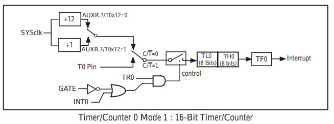

參考資訊：
http://plit.de/asem-51/
http://www.stcisp.com/stcisp620_off.html
https://sourceforge.net/projects/mcu8051ide/
Timer0 Mode2為自動載入的8Bit計數、計時模式，最大可以從0數到256，當數到256時，則觸發Timer0計時中斷

1. AUXR(0x8e)的Bit7(T0x12, 1T、12T) 2. TMOD的Timer0計時模式(CT=0, M1=1, M0=0) 3. 設定TL0、TH0(1T, 0.09us, 11.0592MHz) 4. 設定TR0 5. 設定ET0、EA
main.s
led set p3.2
.org 0x00
jmp start
.org 0x0b
jmp t0_handle
.org 0x100
start:
orl auxr, #80h
mov tmod, #02h
mov tl0, #0h
mov th0, #0h
clr a
clr led
clr tf0
setb tr0
setb et0
setb ea
jmp $
t0_handle:
djnz acc, nothing
cpl led
nothing:
reti
.end
P.S. 1T，(0.09us * 255 * 255) ~= 5.85ms
編譯
$ mcu8051ide --compile main.s
完成